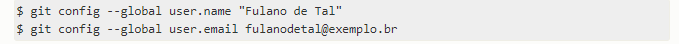
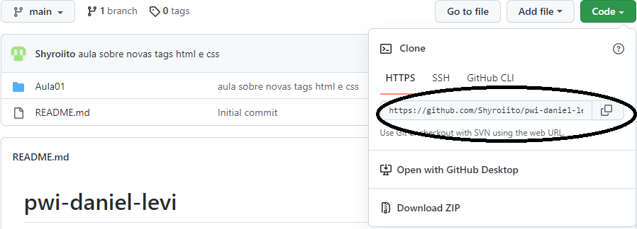
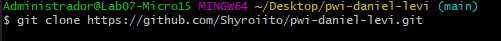

Vamos aprender a configurar o GitBash junto ao GitHub
Primeiro passo
-
Após já termos instalado o terminal gitBash na nossa máquina, clicamos em alguma
parte da área de trabalho e clicamos em
GitBash Here
e vamos começar a configura-lo.
Clique aqui:
- Iremos pesquisar na internet os primeiros passos de como configurar o GitHub
pelo GitBash
- Copiamos o código e colamos no terminal (colamos com o scroll do mouse ou
clicamos com o botão direito e selecionamos a opcão "paste")
- Substitua o username e o email pelo seu!

- Para abrir a pasta você precisa clonar seu repertório no GitHub

- Após copiar o código HTTPS, vamos usar o codigo git clone no terminal e
ficará conforme a imagem abaixo

Dessa forma seu GitHub estará configurado e o seu repositorio estará clonado.